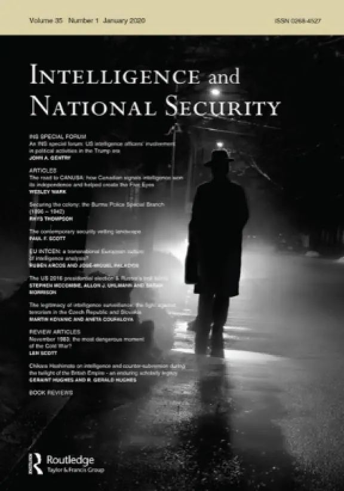

收录于合集 #美国研究 24个

作品简介
【作者】 Sarah Mainwaring ，华威大学政治与国际关系学院博士生，现今受英国经济与社会研究理事会（ESRC) 资助，研究方向主要为英美网络安全和密码学。
【编译】 吴天麟（国政学人编译员，伦敦政治经济学院本科生）
【校对】 朱晓洁
【审核】 刘瑛琛
【排版】 苏语涵
【美编 】聂涵琳
【来源】 Sarah Mainwaring (2020) Division D: Operation Rubicon and the CIA’s secret SIGINT empire, Intelligence and National Security , 35:5, 623-640, DOI: 10.1080/02684527.2020.1774854
期刊简介

《情报与国家安全》关注情报和秘密机构在国际关系中的作用。本刊以全球领先的学术研究为基础，从多个角度对国家安全进行研究。期刊覆盖的主题包括：情报机构的历史发展；公众对情报的理解和期望；情报与伦理；情报收集与分析；秘密行动和反情报；政治在情报行动中的作用；国际情报合作；军事组织和民用政策部门之间的关系。该刊物在2019年的影响因子为0.481。
【美国研究】D部门：卢比孔行动和中情局的秘密信号情报帝国
Division D: Operation Rubicon and the CIA’s Secret SIGNT Empire
Sarah Mainwaring
推荐语
美国的中央情报局（CIA）是不少情报史学家的热门研究话题。中情局诸多的秘密行动和人工情报行动使得此机构深深影响了世界历史的发展轨迹。最近，科学和技术情报已成为中心话题，也同时揭露了昵称“兰利巫师”的中情局科技人员在相关领域的成就。作者认为中情局在科技和技术领域的情报行动依然有许多不为人知的方面。本文探究了中情局对通讯科技的兴趣并揭示了中情局控制全球大部分通讯系统的方式，也展示了中情局和美国国安局（NSA）之间的分歧与其影响主要通讯系统的手法。最近，美国科技禁令所引起的风波导致美国乃至全球人民对通讯系统和网络安全展开热烈讨论。此文清楚解析了中情局如何通过控制基础科技以获取在情报和安全领域上的绝对主动权，有效地展现了美国科技霸权所带来的无形优势。因此，本文与当下时事密切相关。
文章导读
01
中情局（CIA）VS国安局（NSA）-从黄金行动到卢比孔行动
中情局的前身为第二次世界大战期间由美国将军威廉.J.多诺万（William J. Donovan）成立的战略事务厅（OSS），因此中情局继承了其前任组织执行秘密行动和人工情报收集的性质。与此同时，杜鲁门总统（President Truman）因中情局没能警告朝鲜会袭击韩国之后在1952年创立了主要负责进攻性密码分析和防御性信息保障等技术工作的国安局（NSA）。
可是，当2005年前任国安局局长迈克尔·海登（Michael Hayden）将军受布什总统指派到中情局担任局长时，他却意外地发现本应专注于秘密行动和人工情报的中情局却组建了绰号为 “兰利巫师”的 D部门，这一部门具有极为成熟和复杂的信号情报分析能力。海登将军的惊讶反映了美国情报体系内重叠和兄弟机构之间竞争的现象。然而，更为惊人的则是在2020年曝光的卢比孔行动，该事件揭露了中情局D部门如何与西德的联邦情报局（BND）通过并购专门负责加密仪器和通讯加密的Crypto AG达成对全球120个国家的监控。这展示了中情局与私人市场合作控制领先技术的能力及其对信号情报的重视。
其实，卢比孔行动并不是中情局第一次果断和大胆地窃取通讯情报。早在1950年，中情局在“黄金行动”中建造了如柏林隧道等长达1400英尺的通讯隧道，深入苏联占领地区偷听苏军、东柏林苏联大使馆、以及维也纳苏联大使馆与莫斯科的通讯。这些行动推翻了以往我们对中情局专注人工情报收集的假设，显示了中情局对通讯设备终端和通信管道的关注，以及中情局“任何企业的通讯枢纽是最脆弱的一环”的情报哲学。因此，卢比孔行动等针对通讯设备的行动在情报史上并不是例外。不过，卢比孔和黄金行动之间还有另外一个相同之处，那便是国安局和中情局十多年以来之间的分歧。托马斯·约翰逊（Thomas Johnson）解密后的“美国密码史”强调了中情局如何在黄金行动中多次刻意向国安局隐瞒行动细节，好让自己主导情报行动。大名鼎鼎的柏林地道更是由中情局一手建造，时任国安局局长拉尔夫·佳宁（Ralph Canine）将军更是在黄金行动被苏联揭发后才得知有这一行动。而当中情局了解到信号情报的重要性后，该局选择使用其擅长的秘密行动针对通讯设备以占据有利情报。
因此，中情局在1947年成立了由富有个人魅力的中情局情报官比尔·哈维（Bill Harvey）领导的D部门。D部门本来极度依赖国安局信号情报分析师提供的情报，但D部门不满对国安局的依赖，不久便开始了自己的情报生涯。在哈维的领导下，中情局不仅计划挖掘了柏林隧道，还成功说服国安局最高级的密码学专家佛兰克·罗利特（Frank Rowlett)参加中情局的D部门。在哈维和罗利特的领导下，D部门融合了中情局执行秘密行动和国安局在密码学方面的专才，形成了“短距离电话窃听”针对大使馆的秘密渗透或闯入的行动风格。虽然D部门的许多行动依然保持机密状态，但一个1960年的研究报告显示，大部分南美洲的重要人士或政商界领袖的家中存有大量窃听器，这是中情局南美洲重要的情报来源。例如在墨西哥执行的留制权行动针对苏联大使馆附近的电话中转站进行渗透和窃听，而里法特行动则绕过了墨西哥的特务系统直接对著名人士进行偷听，展现了中情局逐渐成熟的渗透、窃听、快速分类解读的情报分析流程。
相反的，国安局高层在卢比孔行动中的表现显得较为保守和迟钝。国安局密码学家威廉·弗里德曼（William Friedman）早在1951年就认识到瑞典裔瑞士商人鲍里斯·哈格林（Boris Hagelin）的公司Crypto AG所制造的加密机对美国信号情报的威胁。弗里德曼向国安局高层强调“1945年后在欧洲生产的加密机会给美国情报体系造成灾难性后果- 我们会在几年后变盲！”。尽管如此，国安局高层依然觉得与Crypto AG总裁鲍里斯·哈格林就加密机达成任何共识过于危险，认为事件被揭发会使得美国在外交和国际舞台上“身败名裂”。尽管国安局局长佳宁将军在1953年表示支持，国安局大部分官僚依然动作缓慢，还对弗里德曼的坚持感到烦躁。情况在1956年更是急转直下，新上任的国安局局长约翰·桑福德（John Samford）将军因对弗里德曼极为不满而立刻取消了与哈格林的“绅士协议”。当时国安局内部有不少情报员和密码专家坚信自己的数学功底加上新购买的电脑使他们能够破解Crypto AG加密机的密码，无需到海外跟哈格林协商一个高风险的秘密协议。中情局为了避免更高级的加密机流入市场，它们直接绕过国安局与哈格林接触，协助哈格林移居美国，同时支付他七十万美元，在1957年签署了“绅士协议”。国安局则在1956年英国的政府通讯总部（GCHQ）改变对哈格林的CX系列加密机态度后，才支持与哈格林达成限制Crypto AG加密机出售的“绅士协议”。
随着弗里德曼在1958年接近退休年龄，他为避免Crypto AG加密机在他离职后流入市场分别向中情局和国安局提议秘密收购Crypto AG。然而国安局的反应持续冷淡，认为与哈格林达成永久协议的带有巨大安全风险，更认为国安局当时的科技、解码技术水平能够轻易破解Crypto AG的加密机，因此并无需要展开高风险、低回报的行动。相反地，中情局极为重视此提议。时任中情局局长艾伦·杜勒斯（Allan Dulles）和一些高级官员都觉得Crypto AG持续发展的加密技术会使美国监听、监视活动大受打击，对美国情报系统构成重大威胁，因此支持对Crypto AG展开秘密收购。
尽管国安局是中情局在卢比孔行动中的伙伴，中情局为避免错失良机在1958年6月向哈格林提出秘密收购Crypto AG的协议，提出了先支付两百万美元的首期付款再加上在合同有效期间每年支付五万美元“保密金”的协议。以上资金会通过一个名为“泛瑞士公司”的空壳公司支付给哈格林控制的Crypto AG。糟糕的是，国安局在协议生效的前几天态度依然犹疑不决，意味着中情局的秘密协议无法通过美国通讯情报委员会（USCIB）的审核和资金拨款，随后国安局更撤回对该协议的支持，彻底破坏了中情局的计划。中情局唯有在1960年11月与哈格林达成禁止Crypto AG密码机向某些国家销售的协议，向哈格林支付了六十万美元的首款加上每年额外七十五万美元的“咨询费”以确保协议继续。以上解密资料显示以往关于这次“绅士协议” 的史料夸大了国安局的角色，同时忽视了中情局蓬勃的信号情报活动，为中情局在冷战进程中因垄断通讯而获的红利埋下伏笔。
02
中情局的临界点
在1967年1月，法德两国政府向哈格林提出共同购买Crypto AG的要求。因为法国和美国两国是Crypto AG最大的客户，美国当局为避免法德并购影响1960年的“绅士协议”，决定离间法德两国。中情局本来就为西德的联邦情报局担任指导以及辅佐角色，因此当中情局向联邦情报局提出德美两国并购Crypto AG并且除法国人的条件时，联邦情报局很快便接受了该协议。1969年，哈格林与其中情局接头人确认并购。最后以德国西门子公司为表面的“买家”，中情局和德国联邦情报局各自支付350万美元分别取得50%的控股，在1970年6月取得对Crypto AG的所有权。该项协议事后成为了西方情报史上最重要的双边情报协议。
对中情局来说，与德国并购Crypto AG代表着更大的控制权。过去的“绅士协议”只允许中情局被动地“拒绝”某些（共产阵型/亲共）国家购买加密机，现在美国能够制造数款早已被美德破解的密码机并“战略性”地售往全球特别是发展中国家以破获当地政府通讯。最讽刺的是，每当各国政府高价买入Crypto AG的加密机时，等同于付钱让西德、美国、甚至5眼联盟窃听自己所有的秘密。在此之后，中情局已经超越了全球通讯安全的临界点，几乎彻底控制了所有通讯。
相比之下，国安局在此协议中的角色相当有限。时任国安局副局长路易斯·托代拉（Louis Tordella）坚持国安局只需担当技术顾问。虽然托代拉承认随时截获敌国通讯的好处，但他依然坚信国安局无需中情局的并购已可破解发展中国家较为低级的通讯，这突出了国安局避险、犹豫不决、短视的特质。令人困惑的是，国安局同时在北约国家当中与英国的政府通讯总部控制加密技术，而这与中情局的秘密收购本质上无任何分别。无论如何，中情局在1970年的秘密收购对之后50年加密机市场形成垄断，截获了无数国家的通讯。
03
中情局在卢比孔行动中的领导位置
中情局为了巩固其对Crypto AG的控制，积极渗透Crypto AG公司的内部。中情局与德国联邦情报局一起在位于瑞士楚格的Crypto AG总部派人假冒新的公司领导对中下层员工进行执导，更以举行定期董事局会议的借口为旧员工举行诸多团建、联谊晚会等活动培养员工们对（中情局）领导的信任。到了1992年，这些活动规模已无法被容纳在慕尼黑的美国领事馆内，需迁移到一层4层建筑物内。以上提到的董事局会议和团建活动保证了美国和德国对公司的控制，也避免了敌对情报组织查明Crypto AG背后的势力。
尽管如此，中情局与国安局的争议依然持续。由于不少国安局特务在前往楚格或慕尼黑参加“会议”的时候不适用假冒身份或缺乏保密意识，令负责掩盖踪迹的中情局十分恼火，也导致卢比孔行动日后被取得国安局人员卡片的记者们行踪暴露。国安局和中情局在执行任务和理念上的分歧在80年代逐渐扩展到商业通讯加密市场里。国安局继续对中情局与摩托罗拉等商业通讯公司的合作持负面态度，坚信自身的破解技术无需卢比孔行动所提供的便利也可破解敌国通讯。无论如何，中情局对商业通讯、电话网络、商业通讯加密公司的兴趣早已开始，展现了中情局脱离自身人工情报“老本行”的倾向不断加剧。
随着卢比孔行动的进展，中情局集中“关注”的销售地点如沙地阿拉伯、韩国、伊朗、南斯拉夫、阿根廷等逐渐增加。卢比孔行动允许美国决策层在发展中国家的冲突中占优，以高视角解决如伊朗人质事件、柏林迪斯科舞厅爆炸案等事件。但既然美国发展中国家的通讯了如指掌，那这代表美国是否对9·30印尼排华屠杀、南非种族隔离政策的恶果、穆巴拉克对政敌的血腥镇压或南美洲右翼军人政府迫害左派等事件视而不见呢？这些问题在冷战历史学家和记者眼中依然有待探究。
当然，卢比孔行动不可能一帆风顺。从1979年开始，埃及、南非、奥地利、阿根廷等国都怀疑Crypto AG设备有问题。中情局随机开始全球搜索具有知名度的密码学家和通讯技术人员为Crypto AG的设备做担保，好让窃听计划持续下去。中情局最成功的“公关主任”便是代号“雅典娜”的林克平大学密码学家凯尔-奥夫·威尔德曼（Kjell-Ove Widman）。中情局借助他在密码行业中德高望重的地位，成功说服不少政府替换Crypto AG新的、更“安全”的加密机避免泄密。威尔德曼的行动直接保证了美国在1978年戴维营协议期间维持对埃及政府通讯的监控，为美国谈判者取得巨大的优势。中情局聘请威尔德曼的举动反映了中情局的果断性以及在信号情报活动中混入人工情报员和“假”加密专家的特色，顺利地避免卢比孔行动暴露。
04
美国独揽大权
****随着冷战的终结，美国在1993年向德国以1710万美元购买Crypto AG另外50%的股权，中情局取得对卢比孔行动的全面控制。这也意味着德国联邦情报局在整体战略和文化上不再依附美国，反映了欧美安保同盟的一些分歧。
战略上，德国联邦情报局在冷战过后一直对卢比孔行动感到矛盾。欧共体的成立使得德国日益向欧洲的战略利益靠拢，导致联邦情报局与中情局在卢比孔行动中的欧洲监听对象上发生冲突，例如德方人员企图阻止中情局窃听意大利政府通讯。而德国统一并签订统一货币的马斯特里赫特条约令德方高级情报官员和政客对中情局的行动感到担忧。前任联邦情报局局长沃尔伯特·斯密特(Wolbert Smidt)曾抱怨“中情局对待盟友的态度跟对待某个第三世界国家一样”，这也令德国陷入严重的道德和外交矛盾中。如果德国在卢比孔行动中的事迹而事件曝光，这会令德国遭受严重的政治和经济后果，德国与美国的安保、情报合作不再能像以往一样密切。因此，联邦情报局在1993年向中情局提出了转让控制权的协定。本来，德国在转让控制权后依然能从美国得到卢比孔行动的情报。结果联邦情报局情报员（代号：金属）发现中情局在“分家“后迅速改变了通讯程式，而中情局的情报输送也彻底停止了。有许多联邦情报局官员对此感到可惜，毕竟卢比孔行动是德美联手执行的情报活动，但德国却自愿放弃了收取最新窃听内容的途径。讽刺的是，五眼联盟反而能够从美国收到卢比孔行动的得益。
中情局在得到了全盘控制权后，在90年代继续使用卢比孔行动的资金秘密收购如Crypto AG对手Gretag AG等通讯保安、加密公司以强化中情局对全球领先通讯科技的控制。至今还有许多公司未知是否被中情局收购。这跟最近如火如荼的华为风波息息相关，因为各国政府和情报机构通过收购科技公司控制上游科技的政策早已是被中情局执行过的、令人警惕的事实。
05
SCS单位与情报融合的大趋势
在1977年，中情局和国安局终于通过被称为“特殊收集部门”或Special Collection Service (SCS)的极高机密单位达成和解，终结了自黄金行动和卢比孔行动开始的分歧。SCS单位融合了中情局D部门具有窃听、渗透、伪装技能的特工和位处美国大使馆内的国安局窃听技术人员。此单位极为机密。不过SCS加拿大通讯安全情报员麦克·佛洛斯特（Mike Frost）透露，中情局和国安局透过SCS以全球96个美国外交建筑为基地，使用了各种异想天开的方法把电子偷听器安装到他国的外交包裹里。到了1990年，海湾战争的阴影使得SCS在伊拉克的任务倍增。佛洛斯特也在采访中表示SCS为了渗透伊拉克政府关键建筑物与电话营运商埃里克森（Ericsson）达成秘密协议，在埃里克森维修网络基建的同时安装窃听器。
当然，国安局避险的特质依然与中情局依赖秘密行动的特性格格不入。不过SCS和卢比孔行动的成功指向各个情报机构和特种部队之间融合的大趋势。因1979年营救美国人质失败的“鹰爪行动”所生的联合特种作战司令部（JSOC）便是这个趋势的象征。
伊拉克和阿富汗多变、复杂的情报和作战情况迫使美国军方、中情局、和国安局联合起来糅合信号、人工、战场情报创造“实时“的战场资讯。2003年上任的联合特种作战司令部司令斯坦利·麦克里斯塔尔（Stanley McChrystal）将军为每个联合特种作战司令部成员创造了即时共享的内联网，好让每个部门互相分享交换各种情报，显示了他对通讯和跨部门沟通在信息化作战环境中的重要性。在美军猎杀本·拉登的当晚，联合特种作战司令部的内联网和强大的通讯系统允许其他12个作战小队同时在阿富汗周围实时执行任务。在猎杀本·拉登当晚同时击毙15-20个目标，达到所有任务、情况现场资料全同步的高信息化作战标准。军方、中情局、国安局的同步情报分享让联合特种作战司令部成为几乎自主行动、极为有效的杀戮机器。
综上所述，卢比孔行动是现今混合编制、混合作战的鼻祖。正如中情局融合其特工擅长的秘密行动和信号情报所需的窃听技术一样，联合特种作战司令部一样融合中情局、国安局、美军各部门各所长达到最佳作战效果。
06
结语
卢比孔行动的成功以及国安局和中情局的内斗迫使我们重新审视中情局作为人工情报机构的定位。虽然我们现今明白中情局如何控制了Crypto AG，但是我们还需继续留意新一代网络公司与中情局之间的关系。而卢比孔行动和联合特种作战司令部的成功也让我们明白到融合信号情报和人工情报的重要性。
译者评述
本文采用了叙事的形式解构美国信号情报体系以及国安局、中情局之间的矛盾，让读者能够清楚了解中情局控制全球科技、上游科技技术的战略，也让我们对中情局在美国情报体系内的位置有所改观。
此文清楚地展示了科学、技术在国家战略中的重要性。一般来说，我们对国家综合硬实力的认识通常来自军备、军事实力以及经济规模等硬指标，与一般商业技术和商业行为无关。可是，文中情局通过秘密收购私有企业以达到控制上游技术的行为让我们意识到传统现实主义外交中的“power”概念能够通过非国家主导、非军事或战略性技术的途径表现出来。无论一个国家经济增长速度有多快，又或者其军备如何在地区占优，对关键技术的掌控决定了其能否继续发展成为在世界经济架构中领导型的国家。在现今高度全球化的经济架构里，以“贸易专门化”达到最高经济效率的概念已经被许多人接受。不过，此文让我们意识到缺乏领先技术自主化的国家只能依赖安全性存疑的高科技公司提供服务，摆脱不了卢比孔行动中依赖Crypto AG技术的120个国家的命运。
文章观点不代表本平台观点，本平台评译分享的文章均出于专业学习之用, 不以任何盈利为目的，内容主要呈现对原文的介绍，原文内容请通过各高校购买的数据库自行下载。
添加 “国小政”微信
获取最新资讯


国政学人
支持学术公益与知识传播
微信扫一扫赞赏作者 __赞赏
已喜欢，对作者说句悄悄话
取消 __
发送给作者
发送
最多40字，当前共字
上一页 1/3 下一页
长按二维码向我转账
支持学术公益与知识传播
受苹果公司新规定影响，微信 iOS 版的赞赏功能被关闭，可通过二维码转账支持公众号。